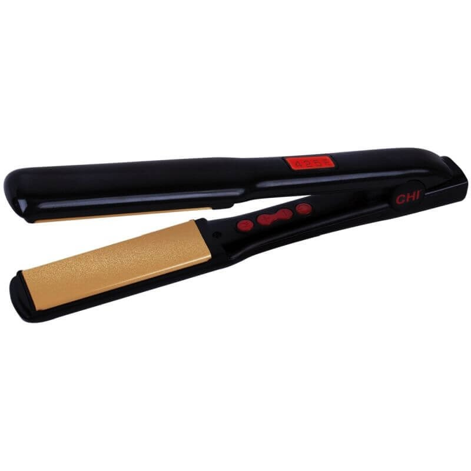

Plaukų tiesintuvai - Krinona
 Prekių pristatymas Grąžinimas ir garantija Atsiskaitymo būdai Parduotuvių tinklas Susisiekime Reikia patarimo? +370 655 94094 Prisijungti / Registruotis Mėgstamos prekės 0jūsų pirkinių krepšelis yra tuščias
Kaina: Peržiūrėti savo krepšelį Buitinė technika Namų technika Smulki virtuvės įranga Grožis ir sveikata Patalpų šildymas, vėdinimasDulkių siurbliai ir jų priedai
Robotai siurbliai Pakraunami dulkių siurbliai Plaunantys dulkių siurbliai Cikloniniai dulkių siurbliai Dulkių siurbliai su vandens filtru Dulkių siurbliai su dulkių maišeliais Priedai dulkių siurbliamsDrabužių lyginimas
Elektriniai lygintuvai Lyginimo sistemos Lygintuvai su boileriais Lyginimo lentos Prietaisai, lyginantys karštais garais Kelioniniai lygintuvai Lyginimo presai Priedai lygintuvamsŠluotos
Prietaisai, valantys karštais garais
Karštais garais valančių prietaisų priedaiPūkų surinkėjai
Langų valymo prietaisai
Kita
Televizoriai ir audio technika
Kokteilinės
Sulčiaspaudės
Trintuvai / blenderiai
Maisto džiovyklės
Griliai
Kamado griliai Kamado grilių priedai El.griliai Dujiniai griliaiMikseriai / Plaktuvai
Maisto kombainai
Daugiafunkciniai maisto kombainai Mini kombainaiMėsmalės
Tarkavimo mašinos, sunktuvai
Elektrinės tarkavimo mašinos Sunktuvai tarkiamsVirduliai
Elektriniai virduliai Neelektriniai virduliai Arbatos virimo aparataiKavamalės
Pieno putų plaktuvai
Elektriniai keptuvai
Sumuštinių keptuvės Lietinių blynų keptuvės Čirvinių blynų keptuvės Elektrinės vaflių keptuvės Keksų keptuvėsDaugiafunkciniai puodai
Elektrinės krosnelės
Skrudintuvai
Gruzdintuvės
Kaitlentės
Maisto svarstyklės
Kita virtuvės įranga
Ledų gaminimo aparatai Pieno šaldytuvai Elektrinės kiaušinių viryklės Spragėsių gaminimo aparatai (POPCORN) Fondiu DuonkepėsVakuumavimo aparatai
Masažuokliai, masažinės vonelės
Nugaros masažuokliai - sėdynės Universalūs masažuokliaiKūno šildytuvai
Vonios svarstyklės
Elektra šildomi paklotai
Oro šildytuvai
Oro drėkintuvai
Ventiliatoriai
Avalynės džiovintuvai
Namų apyvoka Puodai, keptuvės, skardos, kepimo formos Virtuvės ir stalo reikmenys Termosai, gertuvės Laisvalaikio prekės Alkotesteriai AliejaiKeptuvės
Indukcinės keptuvės Neindukcinės keptuvės Ketaus (špižinės) keptuvėsPuodai
Indukciniai puodai Neindukciniai puodai Greitpuodžiai Puodų rinkiniai Puodų priedaiKepimo indai, formos
Kepimo indai Kepimo formos Sausainių formelės Silikoninės formelės saldainiamsDangčiai
Ledų formelės ir priedai
Peiliai
Virtuviniai peiliai Peilių rinkiniai Peilių dėklai, stovai Peilių galąstuvaiPjaustymo lentelės
Maisto pjaustyklės
Tarkos
Mentelės, teptukai, raišteliai
Įrankiai
Česnako spaustukai Įrankiai kauliukams/sėkloms išimti Kamščiatraukiai Kiaurasamčiai Mentelės Skardinių atidarytuvai Skustukai Žnyplės maistui Stalo ĮrankiaiIndai maisto laikymui ir ruošimui
Indai maisto laikymui Salotinės / džiovintuvai Prieskonių malūnėliai PrieskoninėsPadėklai, kilimėliai, pirštinės
Silikoniniai padėkliukai, kilimėliai Padėklai, tortinės Silikoninės pirštinėsKiti reikmenys
Laikmačiai Maisto termometrai Karamelizatoriai ir jų priedai Kaitlentės gramdikliai Konditeriniai maišeliai, švirkštai Šiaudeliai KitaTermosai
Termosai skysčiams Maistiniai termosaiTermosiniai kelioniniai puodeliai
Gertuvės
Paspirtukai
Dviračiai
Vaikiškos mašinėlės
Šalmai
Akiniai nuo saulės
Uodų repelentai
Dviračių priedai
Šašlykinės
Alkotesteriai
Aliejus maistui
Kavos aparatai Kavos aparatai Kiti aparatai Kavos aparatų priežiūra, priedaiAutomatiniai
Kapsuliniai
Pusiau automatiniai
Verslui (Vending)
Profesionalūs
Filtrinės kavavirės
Espreso virimo aparatai
Kavos, arbatos nuspaudėjai
Turkiškos kavos virimo aparatai
Kavos aparatų filtrai
Kiti priedai
Nukalkinimo skystis
Valymo tabletės
Arbata, kava ir kavos produktai Kava Kavos priedai ArbataKava pupelėmis
Malta kava
Kavos kapsulės
Kavos pagalvėlės
Karštas šokoladas
Saldainiai
Šokolado barstikliai
Puodeliai, stiklinės
Vienkartiniai puodeliai
Sirupai
Kiti priedai
Arbata
Grožio prekės Plaukams Burnos higiena Prekės gyvūnams Frezos, dulkių nutraukėjai Papildomos priemonės Kvepalai Vyrams Vienkartinės prekėsElektros prietaisai
Barzdaskutės Formuotuvai, elektriniai suktukai Plaukų džiovintuvai Plaukų kirpimo mašinėlės Plaukų tiesintuvai Plaukų trimeriaiDantų balinimo priemonės
Elektriniai dantų šepetėliai
Irigatoriai
Gyvūnų kirpimo, kantavimo mašinėlės
Peiliukai, antgaliai gyvūnų kirpimo mašinėlėms
Šampūnai / kondicionieriai gyvūnams
Šukos, šepečiai gyvūnams
Frezos
Dezinfekavimui, sterilizavimui
Namams
Aromaterapinės žvakės Eteriniai aliejai Namų kvapaiBarzdaskutės
Plaukų kirpimo mašinėlės vyrams
Plaukų trimeriai
Vienkartinės pirštinės
Paspirtukai Plaukų priežiūra Plaukų formavimo prietaisai Plaukų tiesintuvaiPlaukų tiesintuvai
Šioje kategorijoje prekių nėra
Plaukų tiesintuvas – priemonė suvaldyti nepaklusnius plaukus
Pavargote nuo nuolat besisukančių plaukų? Mūsų internetinės parduotuvės siūlomi plaukų tiesintuvai ištiesins net ir nepaklusniausius Jūsų plaukus. Tokie plaukų tiesintuvai nedegina plaukų, yra patogaus naudojimo, dizaino, dydžio, todėl plaukų tiesintuvas bus patogi priemonė net ir keliaujant.
Prenumerata sėkminga
Uždaryti Sekite mus socialiniuose tinkluose: Tinklaraštis Atliekų surinkimas visoje LietuvojeKrinona
Apie mus Kontaktai Lojalumo programa Parduotuvių tinklas Serviso centras InstrukcijosMūsų Asortimentas
Elektriniai paspirtukai Kamado griliai Buitinė technika Namų apyvoka Kavos aparatai Arbata, kava ir kavos produktai Grožio prekės IšparduotuvėPerkantiems Internetu
Prekių pristatymas Atsiskaitymo būdai Grąžinimas ir garantija Pirkimo taisyklės Naršydami „Krinona” el. parduotuvėje sutinkate, jog naudojame slapukus, kurie užtikrina sklandų apsipirkimą. Daugiau informacijos Sutinku © 2016 Krinona. Visos teisės saugomos. Privatumo politikaPrekė sėkmingai pridėta į krepšelį
Kiekis: 1
Iki nemokamo pristatymo liko 17,23€.
Nemokamas pristatymas (Jeigu suma yra lygi arba didesnė negu 80,00 €)
Tęsti apsipirkimą Pirkti